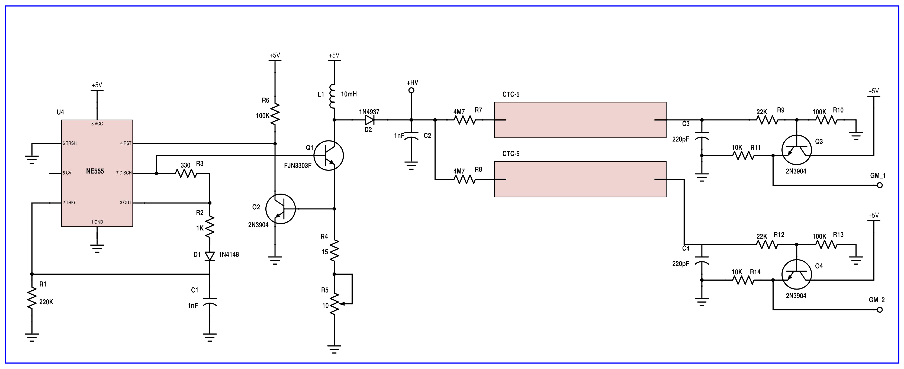
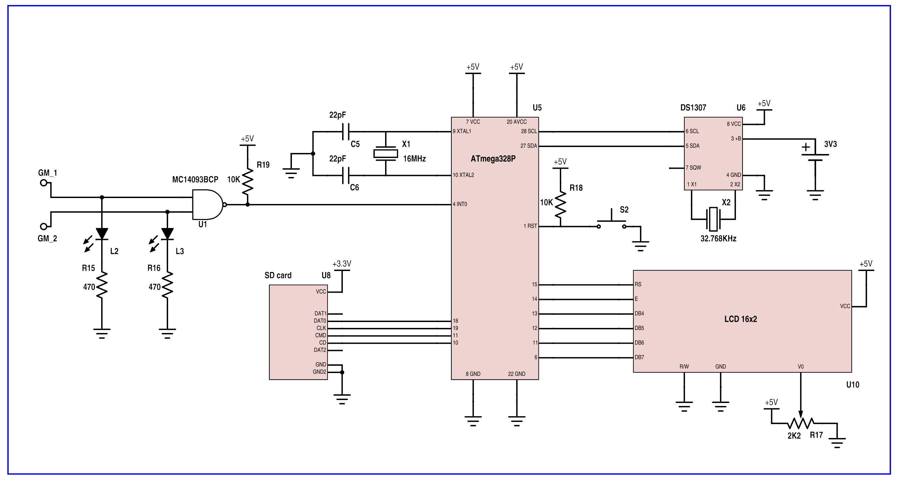

This device can detect electric charge particles using two Geiger Muller tubes. It works thanks to an ATmega328P microcontroller.
A Geiger Muller tube (GM tube) is an electric component that can detect ionizing radiation passing through it. It is composed by a cylindical wall (chatode) and a coaxial cable (anode), between them there is a voltage of few hunreds volts. Inside the tube there is a gas at low pressure (usually helium, argon or neon at 0.1 atm): when a charged particle or a ionizing radiation passes through the tube, it ionizes the gas creating a voltage drop across anode and chatode. The ionization can happen in two ways:
My detector is composed by an high voltage circuit and a logic circuit based on an ATmega328P microcontroller. The high voltage module is a step-up converter that uses an NE555 oscillator. The logic module has an RTC module for dating events stored in an SD memory. There is an LCD that display the current counts detected and I added also a wifi module for the internet connection in order to plot and check live data on a remote server.
In the following images there are the circuit diagram of the high voltage and logic modules.
 This device uses two GB tube (in my case two CTC-5 GM tubes) placed in parallel one over the other at a distance of 1 centimeter. In this way, when a muon comes from the sky, it passes through both GM tubes and the NAND gate detects a coincidence. If there was only one GM tube, it would have detected both muons and random background noise due to natural radioactivity. Putting two GM tube in coincidence is a good way to shield from backround noise, I also added some foils of aluminum under the detectors to shield the radiation coming vertically from the bottom.
And now let me spend few words about the electronics. The step-up converter uses the high frequency output of NE555 to generate high voltage. High voltage level can be tuned with R5. The diode D2 and the capacitor C2 provide direct current to the GM tubes. As I said before, when a GM tube "fires up", it generates a voltage drop of a few dozens volts across its terminals. Transistors Q3 and Q4 map the voltage drop between 0 and 5 volts. The signals GM_1 and GM_2 are sended to the NAND gate (the LEDs L2 and L3 show the live activity of the tubes) and when its output drops to zero (a muon!) activates the interrupt INT0 and the microcontroller counts the event and stores it in the memory.